Generating Synthetic Networks
Building Dummy Data
In much the same way that libraries like sklearn and seaborn come, batteries-included, with utilities to pull canonical datasets or generate novel data following some known distribution, networkx provides dozens of similar utilities. The Graph Generators documentation houses far more methods than I know or care to cover. For simplicity’s sake, I’ll group these methods– broady– into three categories
Canonical
This is used to generate known, well-documented, networks within the Network Science literature– think Iris, but for dots and lines. These include many different networks of varying complexity
import networkx as nx
nx.draw_circular(nx.florentine_families_graph())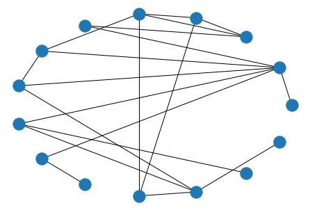
nx.draw_circular(nx.karate_club_graph())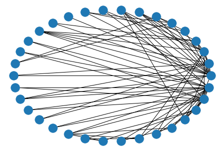
nx.draw_circular(nx.davis_southern_women_graph())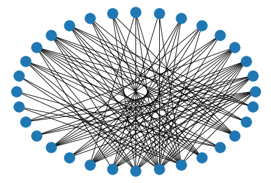
Simple Synthetic
Additionally, the library has methods that generate networks by following a simple set of rules. Such as
# linear
nx.draw(nx.path_graph(10))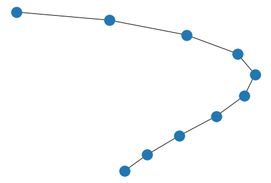
# circle/cycle
nx.draw(nx.cycle_graph(10))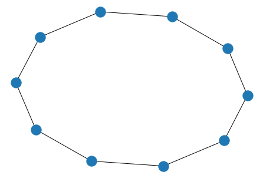
# balanced binary tree
nx.draw(nx.balanced_tree(
r=3, # branching factor
h=3 # height
))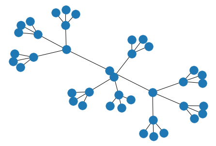
# grid
nx.draw(nx.grid_2d_graph(
m=4,# rows
n=5 # columns
))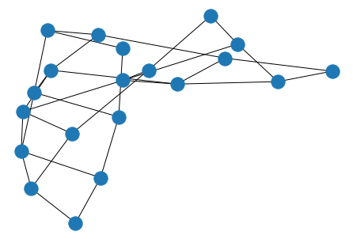
# star
nx.draw(nx.star_graph(25))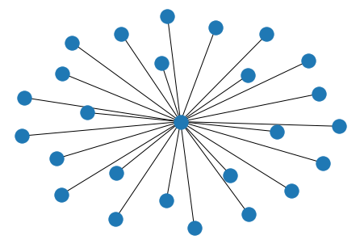
# everything-connected-to-everything
nx.draw(nx.complete_graph(10))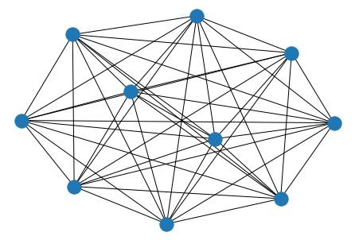
Noisy Synthetic
Finally, the last class of generators uses a hierarchy of rules to generate their graphs. This is particularly useful in simulating data closer to what you’d see in the wild. I’ll try and cover them with a bit more insight.
Erdos-Renyi
This graph is rooted in the binomial distribution, where there are N(N-1)/2 possible edges, each occuring with probability p. Playing with p is a nice lever to pull when you want to ratchet sparsity up/down. However, it’s difficult to predict the effect that has on various network statistics you might be calculating. Complex Network Analysis in Python suggests this as your best bet when generating fake data, unless you know another generation strategy that gets you closer to your ideal data usecase.
nx.draw_circular(nx.erdos_renyi_graph(n=25, p=.1))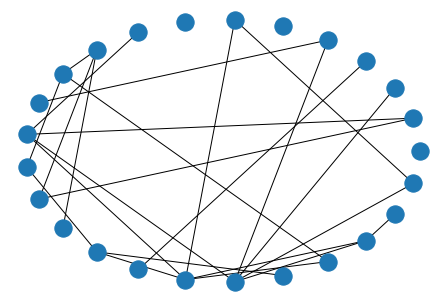
Watts-Strogatz
The Watts-Strogatz generator, while very similar to Erdos-Renyi, tends to generate “more realistic” data than its predecessor, apparently. It does this by generating n points in a circle, then connecting each point to its k nearest neighbors. Finally, it looks over all (from, to) edge pairs and randomly changes the value of to to a yet-unconnected node, with probability p.
nx.draw_circular(nx.watts_strogatz_graph(n=25, k=3, p=.4))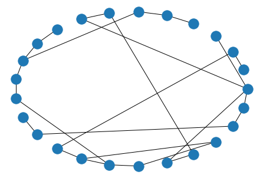
Barabasi-Albert
According to the book, the Barabasi-Albert preferential attachment model is useful when trying to simulate “hubs” or “celebrity” nodes with a high degree of attachment.
It does this by attaching each new node to m other nodes– with a probability weighted to how connected each candidate node is. As a consequence of this, you can see that nodes inserted closer to the beginning have a higher degree than those that eked in at the end and tossed two (often) their only two connections.
G = nx.barabasi_albert_graph(n=25, m=2)
nx.draw_circular(G)
nx.draw_networkx_labels(G, pos=nx.circular_layout(G));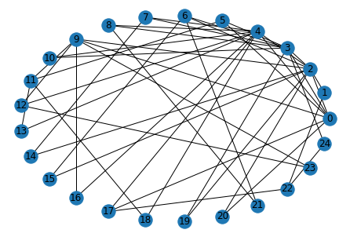
Holme-Kim / Power Law
Finally, the Holme-Kim/Power Law generator does everything described in the Barabasi-Albert, but also introduces a triad between any three connected components, with probability p.
Concretely, if we have A - B and B - C, then we’ll have a connected loop of A - B - C - A - B - C ... with probability p
G = nx.powerlaw_cluster_graph(n=20, m=2, p=.3)
nx.draw_circular(G)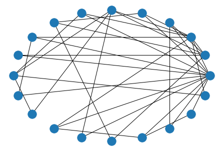